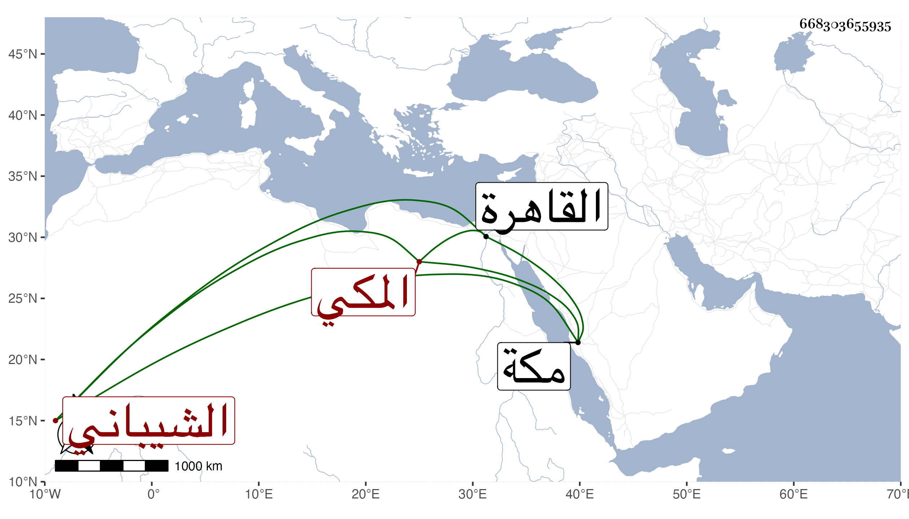

0902Sakhawi.DawLamic.ITO20230111-ara1.EIS1600.668303655935
Biography ID: 668303655935
717
عبد القادر بن عبد الرحمن بن محمد بن يعقوب بن إسماعيل الشيباني المكي الماضي أبوه والآتي جده ويعرف بابن زبرق . ولد فيما قال بعيد الثلاثين بمكة ونشأ فقرأ القرآن واشتغل قليلا ولم ينجب وقدم القاهرة غير مرة ورسم عليه في آخرها بسبب وقف قليشان الذي حبسه السلطان صلاح الدين يوسف بن أيوب على القاضي العز أبي المعالي يحيى أحد أجداده لما وفد عليه وعلى ذريته ولولا الأميني الاقصرائي لكان ما لا خير فيه وتزوج فيها بأخت ابن البحلاق وقاسى من مطلقها ذلا وهو والد زوجة الغياثي أبي الليث بن الضياء أم ولده علي واخوته ، ولم يكن بالمرضى وقاحة وجرأة مع جهل وشكل . مات فجأة في شوال سنة سبع وتسعين بعد أن أوصى بما لم يحمد فيه عفا الله عنه .
